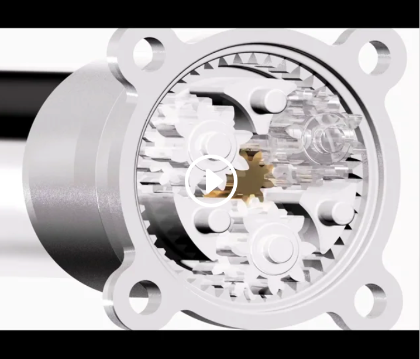
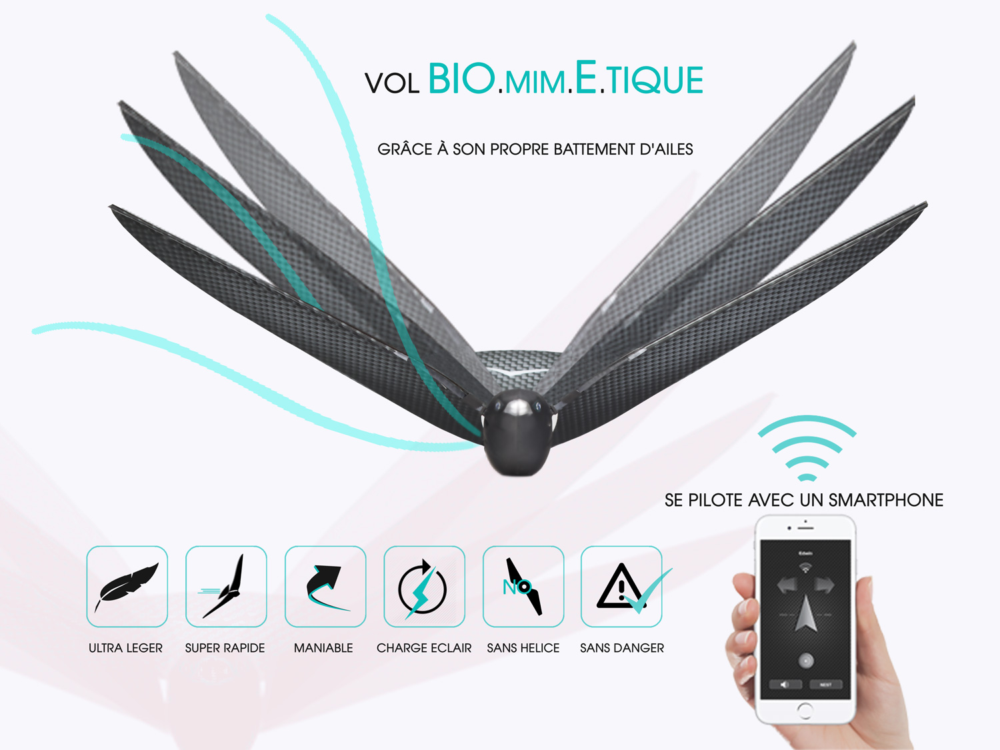

Le Meta Bird est un oiseau volant piloté par smartphone.
Avec plus de 50 ans de R&D sur le biomimétisme et la reproduction du vol des oiseaux, Bionic Bird est à la fois pionnier et leader mondial dans le domaine. Le MetaBird est la dernière évolution du Bionic Bird original. Sa portée de 150m est parfaite pour les grands espaces. La sensation de liberté d’un animal volant est bluffante grâce au réalisme de son déplacement. Le contrôle avec un smartphone via une application est particulièrement intuitif pour vous permettre rapidement de ne faire qu’un avec votre MetaBird. La batterie Lithium Polymère miniaturisée intégrée procure une autonomie de 10 minutes au MetaBird et sa charge complète ne prend que 12 minutes. En utilisant le connecteur USB rechargez le MetaBird facilement, vous êtes prêt pour l’aventure.
Depuis AVITRON, vieux de 10 ans, nos drones ont été pensés et retravaillés en termes de solidité et de sécurité pour vous garantir une expérience amusante et sans risque. Le MetaBird est le fruit de ces 10 ans de maturation. Découvrez le plaisir du vol sans craindre les chutes de votre drone. Doté d’ailes souples en fibre de carbone et polymères à cristaux liquides et d’un corps en mousse indestructible, le MetaBird ne craint ni les chutes ni les impacts quelque soit l’obstacle. Son poids de moins de 10g, l’absence d’hélices et ses éléments de sécurité font également du MetaBird un objet inoffensif pour les personnes autour de vous. Utilisez sans inquiétude le MetaFly pour faire découvrir le biomimétisme à vos proches.
• Un moteur plus puissant et plus robuste rend le MetaBird encore plus dynamique et spectaculaire pendant des centaines d’heures de vol. • Sa nouvelle batterie Lipo 60 mAh d’à peine 1,7 gramme garantit 10 minutes de vols planés, de virages et de voltige. • Sa boite très compacte et légère (130 grammes à peine) est facile à emporter avec vous. • L’équilibrage des ailes du MetaBird est simplifié avec le système des lest coulissants.
RADIOCOMMANDE Application sur Smartphone PROTOCOLE Bluetooth smart PORTEE 150 metres APPLI GRATUITE POUR iOS et Android LONGUEUR 17 cm ENVERGURE 33 cm POIDS 9.5 grams AUTONOMIE EN VOL 10 minutes CHARGE Sur port USB DUREE 1 CHARGE 12 minutes VITESSE DE VOL Réglable de 5 à 20 KM/H VOL INDOOR OUI VOL EN EXTERIEUR OUI VOL PLANE OUI
• Parce que le MetaBird est BIO.MIM.E.TIQUE, un parfait mélange entre nature et technologie ! • Parce que le MetaBird est conçu pour durer avec ses ailes souples et son corps en mousse indestructible. • Sans hélice et léger comme une avion en papier il est absolument sans danger. Volez sans stress ! • Parce-que le METABIRD est un savant concentré de tous ses aïeux ! • Parce que le MetaBird n’a pas de caméra embarquée tout comme ses héritiers. Il est destiné au pur plaisir et à la volonté de l’expérience du vol BIO.MIM.E.TIQUE. • Parce que Son prix est aussi léger que celui de ses aînés couverts de récompenses : “médaillés d’or” au célèbre concours Lépine, Prix Eiffel, ou encore élus “plus bel objet connecté de l’année”…
